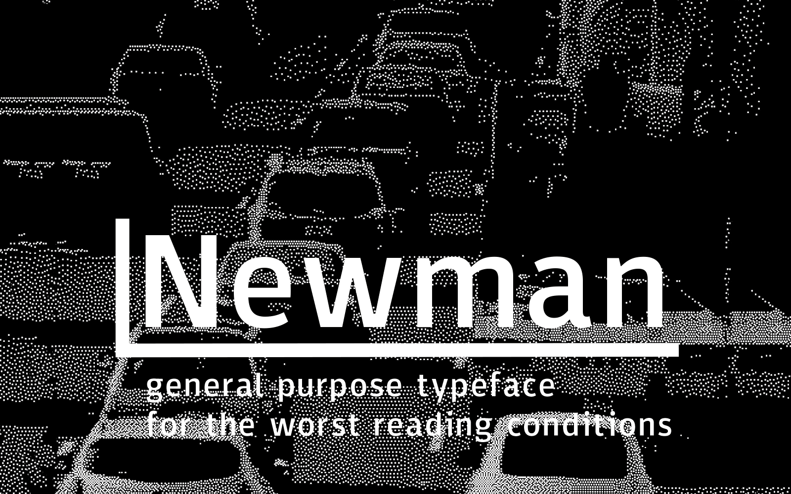
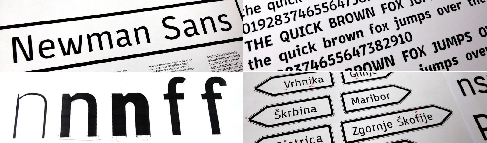
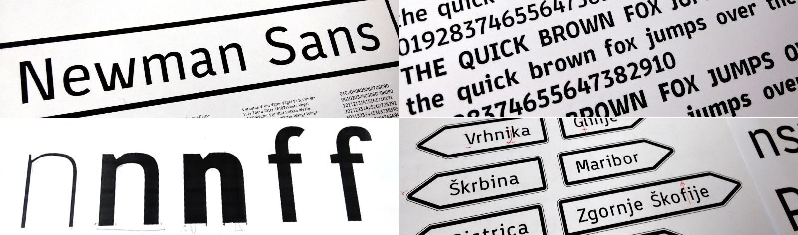

Newman Sans Typeface
The objective was to design a typeface that could be by all standards considered normal.
Normal is something that represents the middle 95% of a bell curve, therefore something that is statistically most common and expected.That means a different thing for different people, but speaking as a designer… id probably choose sans serifs typefaces.
Newman is a humanist sans serif typeface inspired by traffic signalization. Its robust design, large x-height, exaggerated ink traps and wide open counters provide us with extremely high readability even at small sizes, low-resolution screen ...or the fifth glass of wine.
 
